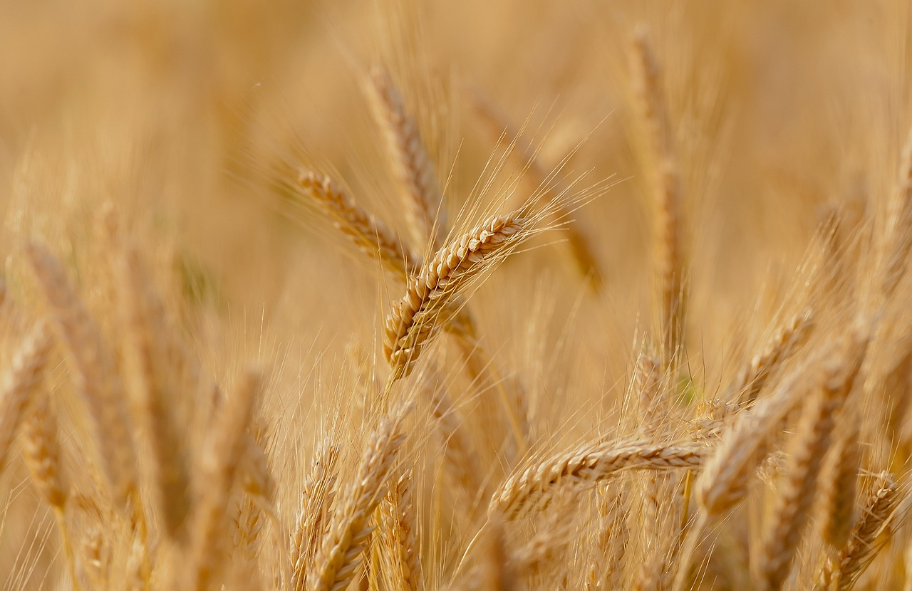

Trigo
O trigo é um dos cereais mais importantes do mundo, sendo cultivado em várias regiões devido à sua versatilidade e valor nutricional. É uma planta gramínea da espécie Triticum spp., da família Poaceae (ou Gramineae), amplamente utilizada na produção de farinha para diversos fins alimentares.
O trigo começou a ser cultivado e utilizado por povos antigos no período Neolítico, aproximadamente entre 10.000 e 12.000 anos atrás. Esse período marca o início da agricultura, quando os seres humanos começaram a se estabelecer de forma mais sedentária e a cultivar plantas e criar animais.

